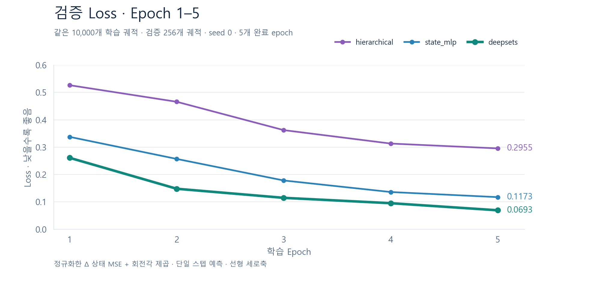

큐브 접촉 동역학 · 모델 해설
표면의 상호작용을 읽고,
큐브의 다음 움직임을 예측합니다.
DeepSets는 큐브와 바닥의 표면 포인트를 함께 인코딩한 뒤, 큐브 포인트의 표현을 평균으로 모아 상태 변화량을 예측합니다. 실제 구현과 5 epoch 학습 기록, 저장된 투척 rollout으로 구조와 결과를 살펴봅니다.
기준: 2026년 10월 19일의 5 epoch 체크포인트와 갱신된 시각화. 아키텍처는 참고 다이어그램의 구성을 따라 실제 코드로 확인했습니다. 영상·상태 그래프·Loss 차트는 저장된 실험 결과를 사용합니다.
아키텍처: 환경을 읽고, 큐브만 모읍니다
현재 구현의 핵심은 Hilbert 순서의 국소 어텐션 + 동적 포인트 평균 풀링 + 물체 문맥 결합입니다. 아래 단계를 누르면 각 단계의 입력과 출력을 확인할 수 있습니다.
현재 상태를 물리적 특징으로 변환
위치·쿼터니언·선속도·각속도로 이루어진 13차원 상태와 6차원 힘·토크를 입력합니다. 큐브 6면에서 면당 64개, 바닥에서 256개를 샘플링하고, 현재 큐브 루트 좌표계에서 위치·법선·속도·재료·정적 여부를 표현합니다.
action: B × 6 (이번 투척은 모두 0)
포인트: B × 640 × 21
Δŝ = decoder(zp + zb) → ŝt+1 = apply_delta(st, Δŝ)
바닥의 정보는 어디로 갈까요?
바닥 포인트는 큐브와 함께 공간적으로 정렬되어 국소 어텐션에 참여합니다. 주변 환경의 정보가 큐브 표현에 전달된 뒤, 마지막 평균에서는 바닥·벽 등 정적 포인트를 제외합니다.
계층형 모델과 무엇이 다를까요?
DeepSets 분기에서는 면 토큰·패치 풀링·링크 어텐션·전역 어텐션을 실행하지 않습니다. hierarchical은 포인트 → 면 → 물체의 단계적 집계를 사용하고, 여기서는 큐브 포인트를 직접 평균 냅니다.
12D 출력은 현재 루트 좌표계에서 정의한 위치·회전벡터·선속도·각속도의 변화량입니다. apply_delta가 좌표 변환과 쿼터니언 갱신을 수행해 다음 13D 상태를 만듭니다. 포인트별 MLP만 쓰는 순수 DeepSets와는 달리, 이 구현은 평균 풀링 전에 국소 어텐션을 사용합니다.
시각화 결과: 같은 시작, 2초 뒤의 예측
왼쪽 화면은 저장된 정답(GT), 오른쪽은 모델의 자율 rollout입니다. 최초 상태만 GT에서 받고 이후에는 자신의 예측을 다음 입력으로 사용합니다. 모든 action은 0이며, 두 화면은 동일한 시간과 GT 기준 카메라를 사용합니다.
DeepSets · 5 epoch
비교 모델
위 수치는 선택한 DeepSets 사례의 전체 100스텝을 평가합니다. 위치 RMSE는 100스텝의 x·y·z 성분 오차를 제곱해 평균한 뒤 제곱근을 취한 값이며, 영상 아래의 시각별 유클리드 거리와 정의가 다릅니다.
선택 사례의 상태 변화와 오차

시각화 6개 사례의 개별 수치
| 투척 ID | 위치 RMSE | 회전 오차 평균 | 선속도 RMSE | 완료 스텝 |
|---|---|---|---|---|
| 11000 | 0.2571 m | 52.8° | 0.4708 m/s | 100/100 |
| 11001 | 0.2018 m | 51.2° | 0.3951 m/s | 100/100 |
| 11002 | 0.2127 m | 73.9° | 0.3944 m/s | 100/100 |
| 11003 | 0.2200 m | 7.5° | 0.3749 m/s | 100/100 |
| 11004 | 0.2243 m | 59.4° | 0.3623 m/s | 100/100 |
| 11005 | 0.0978 m | 5.9° | 0.2170 m/s | 100/100 |
ID 11000–11005는 테스트 split에서 ID 순으로 고른 6개 사례입니다. 100스텝 계산 완료는 물리적 정확성을 뜻하지 않습니다. 충돌 시점·회전·착지 뒤의 드리프트는 영상과 시계열을 함께 확인하세요.
Loss 차트: 다른 모델과 같은 조건에서 비교
같은 큐브 투척 데이터, 학습 10,000개·검증 256개, 5 epoch, seed 0 기록을 비교했습니다. 세 모델의 데이터 fingerprint, 검증 trajectory ID, 타깃 정규화가 동일한 기록입니다. 아래 점은 각 epoch의 실제 측정값이며 선은 점을 연결한 것입니다.


| 모델 · 모두 5 epoch | 최종 학습 손실 | 최종 검증 손실 | 시각화 6개 평균 위치 RMSE |
|---|---|---|---|
| deepsets | 0.07423 | 0.06929 | 0.2023 m |
| state_mlp | 0.12530 | 0.11734 | 0.1655 m |
| hierarchical | 0.29518 | 0.29549 | 0.9822 m |
DeepSets의 학습 추세
검증 손실은 1 epoch의 0.26099에서 5 epoch의 0.06929로 약 73.5% 감소했습니다. 이번 5 epoch 기록에서는 세 모델 중 최종 검증 손실이 가장 낮습니다.
Loss와 장기 예측은 함께 봅니다
6개 영상의 평균 위치 RMSE는 state_mlp가 0.1655 m, DeepSets가 0.2023 m입니다. 검증 1-step 손실과 자율 100-step 위치 오차는 평가 구간과 항목이 달라 순위가 같지 않을 수 있습니다.
Loss = 평균[((예측 변화량 − 정답 변화량) / 정규화 척도)²] + 평균[쿼터니언 회전 거리²]
이번 설정의 rollout_steps=1에서는 학습·검증 모두 한 스텝의 목적함수를 측정합니다. 손실은 위치 오차(m)만을 뜻하지 않으며 회전 항도 포함합니다. 학습 기록은 epoch 도중의 갱신되는 가중치로, 검증 기록은 그 시점의 가중치로 계산되어 두 곡선의 높이를 일반화 격차로 곧바로 해석할 수는 없습니다.
epoch별 검증 손실 표
| epoch | deepsets | state_mlp | hierarchical |
|---|---|---|---|
| 1 | 0.26099 | 0.33761 | 0.52645 |
| 2 | 0.14798 | 0.25701 | 0.46590 |
| 3 | 0.11479 | 0.17824 | 0.36229 |
| 4 | 0.09523 | 0.13604 | 0.31316 |
| 5 | 0.06929 | 0.11734 | 0.29549 |
모델·seed별 1회 기록입니다. 선택된 영상 6개와 5 epoch의 결과로 구조의 일반적 우열이나 수렴을 단정하지 않습니다. 현재 완료된 동일 조건의 세 모델만 차트에 포함했습니다.
사용한 코드와 실험 기록
구조·손실의 근거
참고 아키텍처 문서
포인트 인코더·집계: dynamics.py
21D 포인트·42D 물체 특징: geometry.py
12D 변화량·쿼터니언 갱신: state.py
손실·학습 기록: learning.py, training_runtime.py
코드 위치: src/cube/models/ · src/cube/experiments/
시각화의 근거
체크포인트 경로·SHA256·저장 epoch
DeepSets 선택 조건·렌더링 메타데이터
Loss 원본 기록의 재현용 요약
원본: outputs/cube-toss-suite-final/deepsets_budget10000_seed0/best.pt
시각화 고정본: outputs/visualization-checkpoints/trained-toss-20261019/deepsets-best.pt
새로운 일러스트를 생성하지 않았습니다. 이 문서의 영상과 상태 그래프는 기존 rollout 출력이며, Loss 차트는 실제 training.json 수치를 임시 코드로 그렸습니다. 데이터나 모델 가중치를 재학습하지 않았습니다.